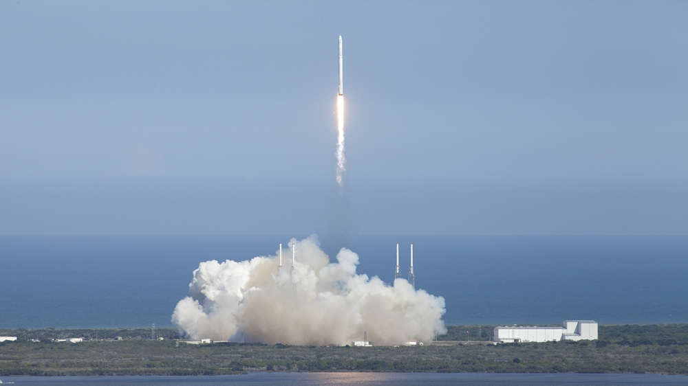

Roket, mekanik anlamda bir jet motorunda olduğu gibi yanma işlemine bağlı olarak itki üreten ancak bunu yaparken çevreden mecburi bir hava girişine ihtiyaç duymayan motora verilen addır. Bir roket motoru kullanarak öz-itki üreten askerî ya da sivil amaçlı mermi, füze, uzay-hava araçlarının tamamına da roket denilebilir.
TEKNOFEST Teknoloji yarışmaları kapsamında Roket Yarışması düzenlenmektedir. Roket Yarışmanın amacı öğrencilerin uzay teknolojileri alanına ilgilerini arttırarak bu alandaki kabiliyetlerini geliştirmektir. Havacılık, uzay ve teknoloji konularında toplumda farkındalık oluşturmak, bu alanlara ilgisi olan gençleri desteklemek, gençleri geleceğin teknolojileri üzerinde araştırma yapmaya özendirmek ve profesyonel tasarım süreçlerine aşina olmalarını sağlamak amacıyla TEKNOFEST Havacılık, Uzay ve Teknoloji Festivali kapsamında birçok teknoloji yarışması düzenlenmektedir.
Yarışma kapsamında takımların; Ön Tasarım Raporu (ÖTR), Kritik Tasarım Raporu (KTR), Atış Hazırlık Raporu (AHR) olmak üzere 3 farklı rapor hazırlamaları gerekmektedir.

SpaceX, NASA'nın "Crew-3" astronotlarını Uluslararası Uzay İstasyonuna ulaştırdı

Roketsan'ın TEKNOFEST kapsamındaki Roket Yarışması'nın kazananları belli oldu
TÜRKSAT 5B uydusunu 19 Aralık sabah 06.58'de SpaceX Falcon 9 roketiyle uzaya gönderiyoruz.